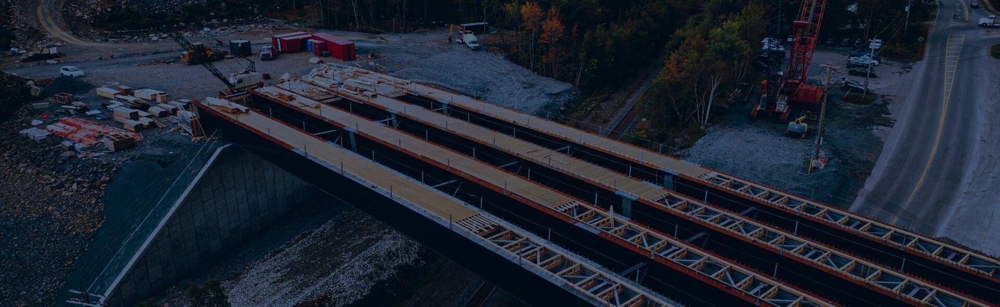
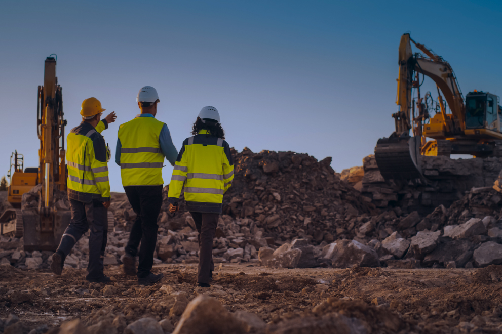
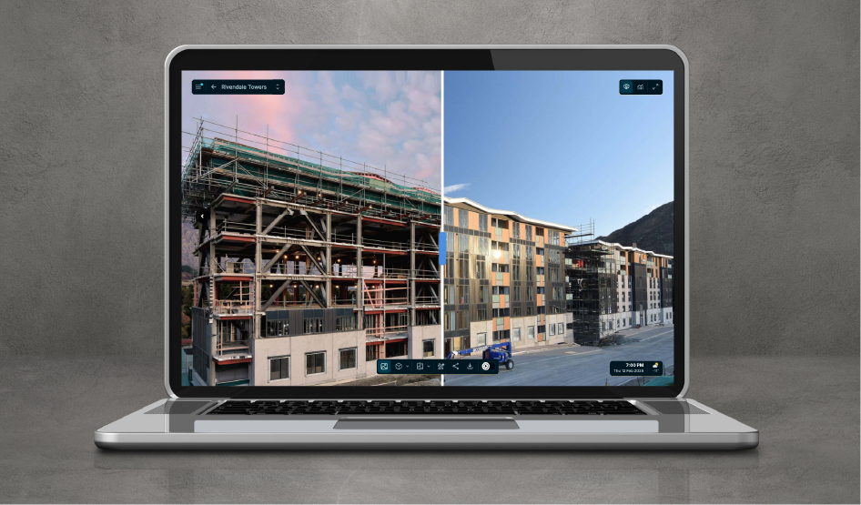

This is a hypothetical redesign of the Timescapes homepage, built as a work sample for my application to the Senior Product Marketing Manager role in Vancouver.
The current homepage is very good at explaining what Timescapes is, but I think it should do more. It should explain why customers choose Timescapes and who its customer becomes: the jobsite hero who delivers a build faster, safer, and smarter. This is someone with mud on their boots and a spreadsheet open on the other screen. They don't care about reality capture; they simply want the job to move faster, they want nobody hurt, and they want to not lose the argument at the end of it.
So the page is rebuilt around reaching that customer quickly, using language they already use: faster, safer, smarter. Each is a link into the section that proves it.
Every metric, customer name and quotation below is drawn from timescapes.co as published. I re-worked existing copy and evidence that is currently under-used; I have not invented a product claim anywhere on this page. The imagery, color and typography are Timescapes' own, augmented with a single orange accent that marks what is new.
The pink blocks throughout are my notes on why each change was made. The closing section sets out how I would take this from a homepage into a full go-to-market motion. All of it is built from public material, so with win/loss data and a week of customer calls some of it would change. That is the first work, not a caveat. This is a good indication of How I'd start.
Decisions at site speed, from wherever you happen to be standing.

Cameras were placed for comprehensive coverage of a new domestic terminal inside a fully operational airport. Continuous image capture and automated visual data collection helped eliminate manual tracking, letting the team monitor progress efficiently.
Source: Timescapes case study, Hawkins NZ / Auckland AirportSee the near miss, not just the incident report.
Auckland Airport asked Hawkins to use Timescapes, based on its track record on earlier airport projects. The owner specified the tool. That is the strongest commercial signal on the entire site, and it currently appears nowhere on the homepage.
Source: Timescapes case study, Hawkins NZ / Auckland AirportWin the argument before anyone starts having it.
Customer care was fielding constant calls from homeowners wanting progress. After engaging Timescapes, Mattamy reported an 80% reduction in customer care inquiries, because homeowners could get real-time visual updates on their development themselves.
Source: Timescapes case study, Mattamy Homes

"This project proved that Timescapes isn't just a progress monitoring tool — it's an operational asset that drives efficiency, collaboration and safety."
Christian McCartney"Once Timescapes cameras are set up on one of our projects, the number of inquiries about progress drops significantly, which makes the communication pipeline much more efficient."
David DeKort"I only work on Timescapes sites."
Not a customer quote. This is the sentence every customer story should be built to end on, and the standard the reference program is measured against.Both quotes above are real and published, we're just elevating them. And I think McCartney's title, "Technology Systems Lead" is something to pay attention to; that's our target customer. Muddy boots, open spreadsheets.
The dark panel is aspirational; it's something we want subcontractors or builders to say. We want our hero to choose Timescapes, and their crew to thank them. Timescapes sites are faster, safer, smarter. This is the energy that makes "Built with Timescapes" a club.
A go-to-market motion, an enablement program, and a function that outlives both.
We've developed and focused the homepage for our target hero persona: the technology or delivery lead at a Tier 1 or 2 general contractor. Muddy boots in the morning, spreadsheet in the afternoon.
Measured on schedule and margin, exposed on whether the job runs late or whether anyone gets hurt.
They don't sign the contract. They choose Timescapes and take the credit when they deliver a faster, safer, smarter project. McCartney at Hawkins is this person, on Timescapes' own site, in their own words.
Our hero keeps owners and developers informed, and sometimes, like Auckland Airport, they're the ones telling our hero what to use.
Three outcomes you can feel on a site, one tool, one hero. Faster, safer, smarter: three words sales teams can own and believe in without having to memorize.
They also work as a filing system. Every campaign, release note and battlecard belongs to one of them. When something won't file, it's usually unfocused. We stay focused.
So how do we make it a practice?
First, we audit. We sit in on calls, read win/loss reports, ask sales teams what they need. We start with what we already know, name what we don't, and then go find that out too.
Next, we adapt our framework based on what the audit finds. We ship one launch through the whole motion: battlecards, an objection guide, an ROI calculator, case studies. We see where deals actually fall apart, and update the framework as our knowledge grows.
We integrate AI throughout, in four places it does real work: competitive monitoring, research synthesis, first drafts, enablement generation. This page was built that way. AI handled research and drafting; I made the positioning calls.
We work with regional marketing managers to deliver resources that meet their specific needs.
Finally, we make that curious improvement a habit, not a phase: audit again, ship again, adjust again.